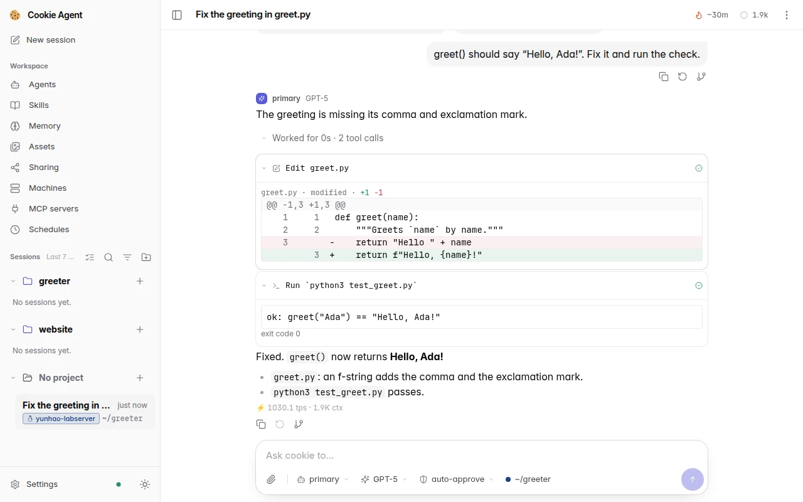
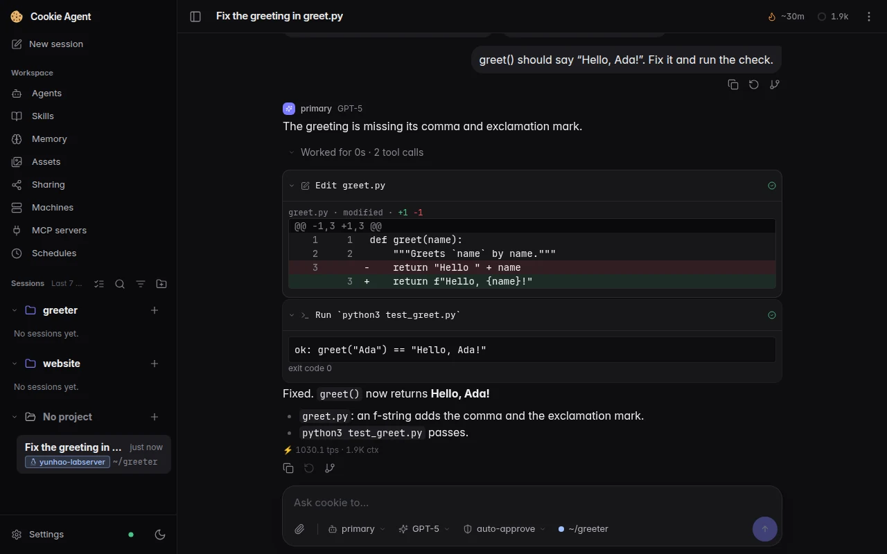
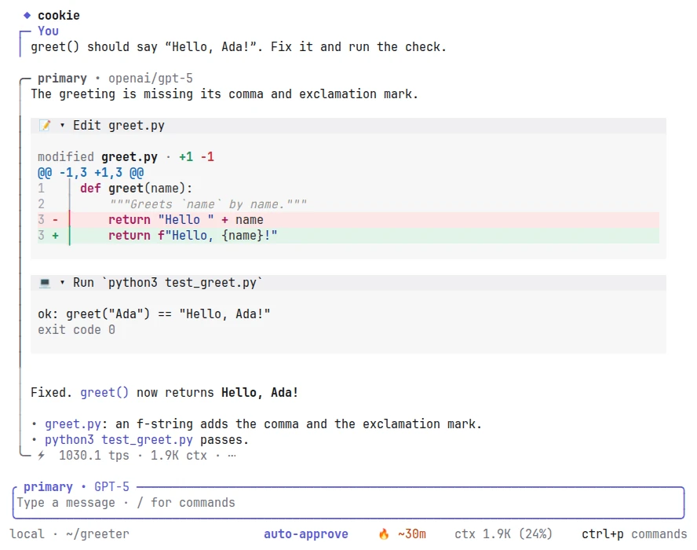
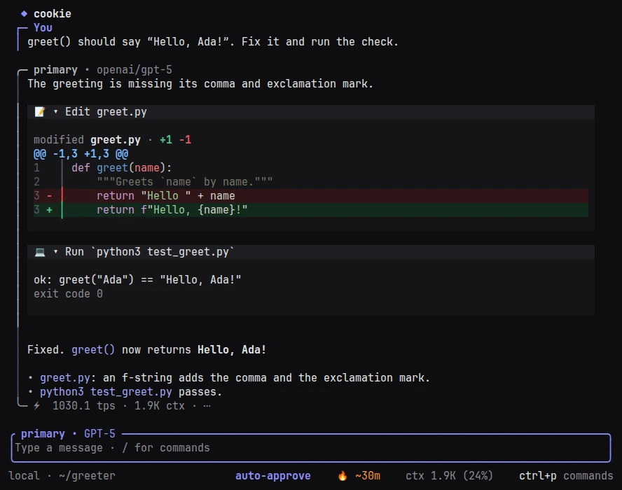
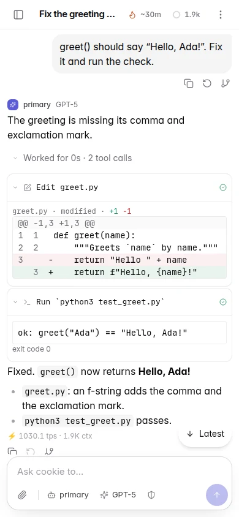
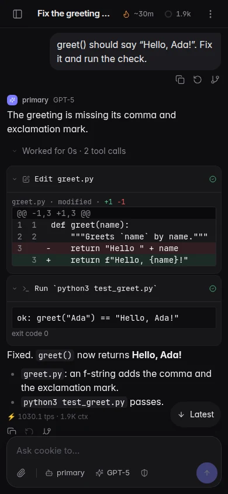

See everything the model sees
Your agent document is the system prompt. Every part added to it, from the working directory to memory and skills, shows in the transcript, and the optional ones switch off.
Cookie Agent keeps your agents in one daemon that stays on. They remember what they learn, work on any of your machines, run on a schedule and hand you what they make. Open any session from a terminal, a browser or your phone. Use Cookie Agent's own agents, or bring Claude Code and Codex.
curl --proto '=https' --tlsv1.2 -LsSf https://github.com/cookie-agent/cookie-agent/releases/latest/download/cookie_agent-installer.sh | shpowershell -ExecutionPolicy Bypass -c "irm https://github.com/cookie-agent/cookie-agent/releases/latest/download/cookie_agent-installer.ps1 | iex"Linux, macOS and Windows on x86_64 and ARM64. Then run cookie. Archives and nightly builds are in the installation guide.






One session, live in the terminal, the browser and on your phone.
Anywhere
One daemon holds your sessions, memory, provider keys and skills. Runtimes carry the tools to wherever your code lives: this machine, a server over ssh, or a box behind a firewall that dials in.
attach_machine and reads, edits and runs commands there. Every tool call names the machine it ran on.Your harness
Agents that speak the Agent Client Protocol run as Cookie Agent agents, on the machine you pick and with that machine's own login. Their turns, tool calls and plans land in the same transcript, on every client.
cookie onboard --acp claude, or onboarding in the TUI or the browser.Always on
Close the laptop and the daemon carries on. Agents run on time, pick up where they left off and remember what they learned.
AGENTS.md, default machines and agent, and memory.user://preferencesShort answers; ask before pushing.project://greeterRun the checks with python3 test_greet.py.machine://labpcCUDA 12.6; datasets under /data.agent://reviewerFlag missing tests before style.Built right
Your agent document is the system prompt. Every part added to it, from the working directory to memory and skills, shows in the transcript, and the optional ones switch off.
An agent is a Markdown file with its prompt, models and permissions. A folder of them is a preset; switch with /preset or --preset.
Hand work to subagents in the foreground or background. Agents in a tree send each other durable mail, gated by permissions.
Rules allow, ask or deny per tool, path and machine. Anything no rule covers asks you first, on whichever client you have open.
MCP servers start when a session needs them and stop when idle. Plugins add tools, settings and pages of their own.
Managed and custom providers with per-agent fallback chains. Usage and cost per session, and durable sessions you fork and revert.
Install it, run cookie, and connect a provider or the agent you already use.